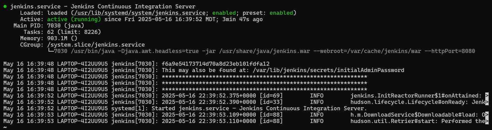
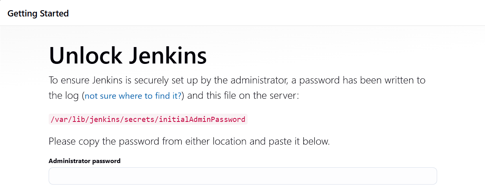

Jenkins is an open-source automation server widely used for Continuous Integration (CI) and Continuous Delivery (CD). It automates the process of building, testing, and deploying software, enabling frequent code integrations and early issue detection.
Key Features of Jenkins
- Pipeline as Code: Define complex workflows using declarative or scripted pipeline syntax.
- Plugin Ecosystem: Over 1,800 plugins including GitHub, Docker, Maven, and Slack.
- SCM Integration: Seamless Git integration enables automatic build triggers.
- Extensibility: Highly customizable for any workflow or tech stack.
- Distributed Builds: Build across multiple nodes for improved scalability.
Setting Up Jenkins
- Update and upgrade your system:
sudo apt update && sudo apt upgrade -y - Install Java (required):
sudo apt install openjdk-17-jdk -y - Install Jenkins:
sudo apt install jenkins -y - Start Jenkins:
sudo systemctl enable jenkins && sudo systemctl start jenkins - Access Jenkins at:
http://<your_server_ip>:8080


Pipeline Overview
The Jenkins pipeline runs a Python-based NETCONF script on GitHub push events. It:
- Installs libraries:
ncclient,pandas,pylint - Performs lint checks with quality thresholds
- Runs
netman_netconf_obj2.py - Executes unit tests via
test_netconf.py - Sends email alerts based on build status
Jenkins Pipeline Configuration
- New Item: Create a new Pipeline project.
- General Tab: Add GitHub repo URL.
- Build Triggers: Enable "GitHub hook trigger for GITScm polling".
- Pipeline Tab: Select "Pipeline script from SCM", choose Git, enter repo URL, credentials, and branch (e.g.,
main).
GitHub Webhook Integration (Using ngrok)
- Run:
ngrok http 8080to get public URL - In GitHub → Settings → Webhooks:
- Payload URL:
https://your-ngrok-url/github-webhook/ - Content type:
application/x-www-form-urlencoded - Events: Push only
Email Notification Configuration
- Go to: Manage Jenkins → Configure System
- SMTP server:
smtp.gmail.com - Enable SSL/TLS on port 465
- Enter Gmail credentials, save and test
Trigger and Verify CI/CD
Once configured, push any code change to the GitHub repository. Jenkins will auto-trigger a new build.
Look for this message in console output:
Started by GitHub push by AravindhGoutham
Email on Success
Upon successful pipeline execution, Jenkins will automatically send an email confirmation to the configured recipient.